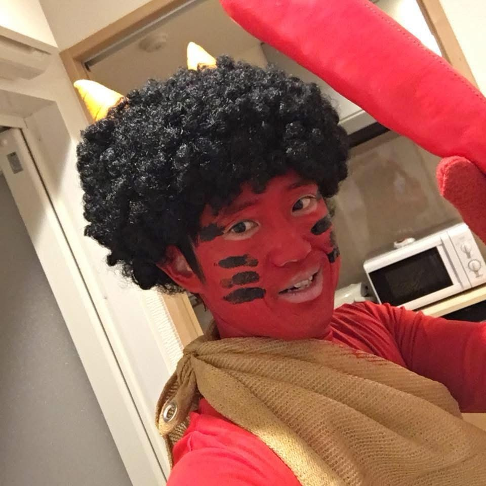
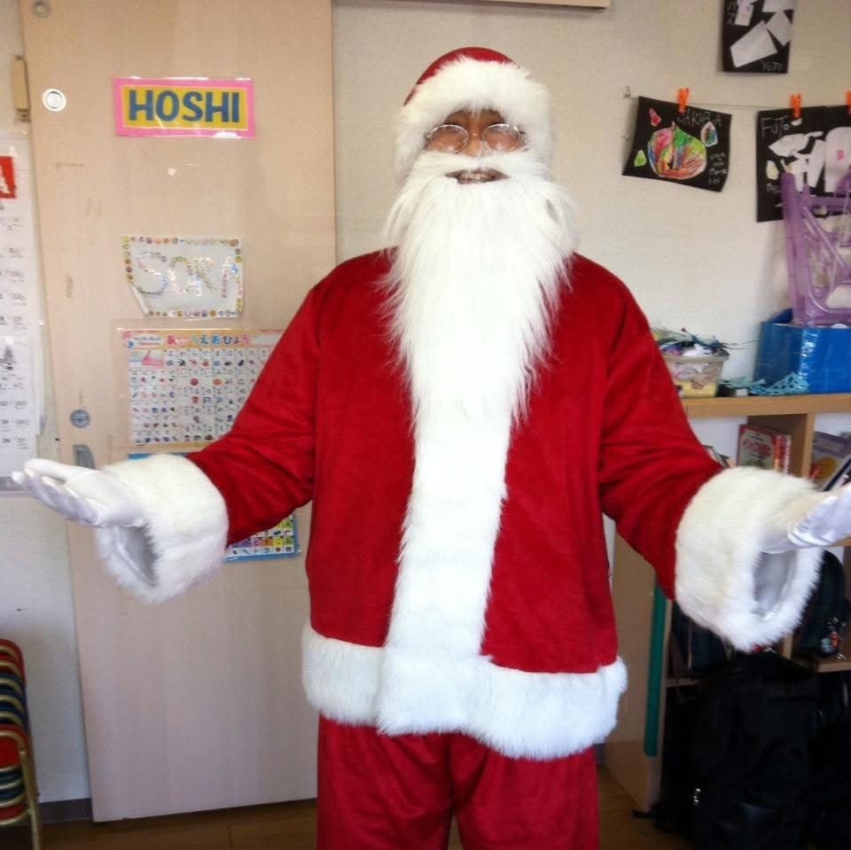
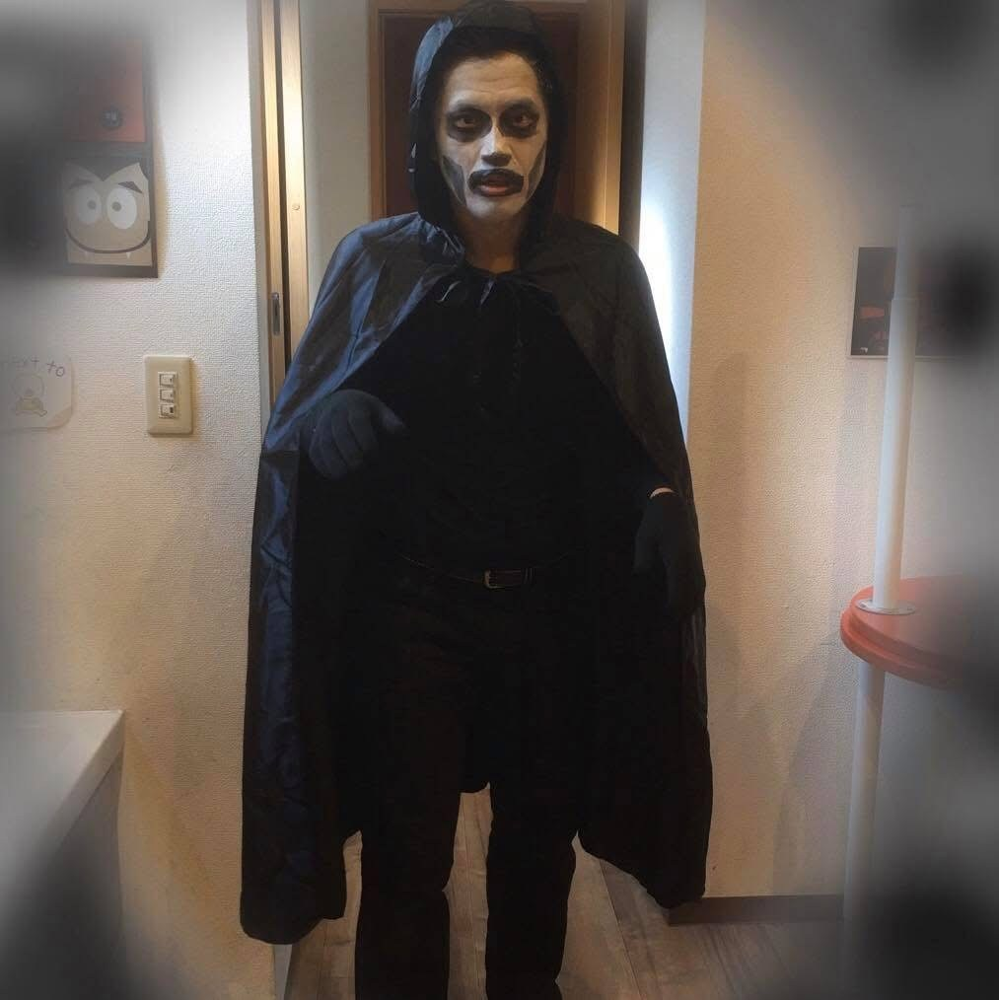

👶
保育実践・行事
担任・主任・園長として経験した保育、行事、職員育成などを紹介します。
準備中・今後追加予定 →親しみやすさと、現場で積み重ねてきた経験の両方を大切にしています。



保育士、主任、園長、学童保育、発達支援、日本語教育など、子ども・保護者・職員と関わる仕事を幅広く経験してきました。
このサイトでは、これから始めることだけでなく、すでに実践してきた講義、行事、幼児プログラミング、海外・日本語教育、Web制作などを少しずつ整理して公開します。
今ある経験や資料を、まずは見える形にしていきます。
担任・主任・園長として経験した保育、行事、職員育成などを紹介します。
準備中・今後追加予定 →ChatGPTなどを、保育計画・文章作成・会議準備に活用する方法です。
AI活用記事を見る →VISCUITやScratchJr.を使った講義・実践資料を整理して公開します。
準備中 →実際に行った講義や、考えを整理するために使った資料を紹介します。
準備中 →日本語教師の経験、韓国留学、ネパール出張などを実践記録として残します。
準備中 →忙しい日でも作りやすい、簡単・節約・家庭向けの料理を写真付きで紹介します。
準備中 →